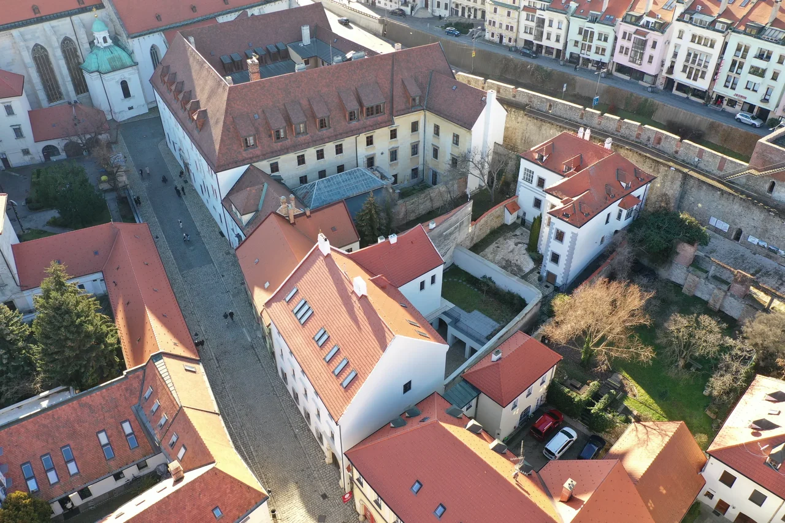
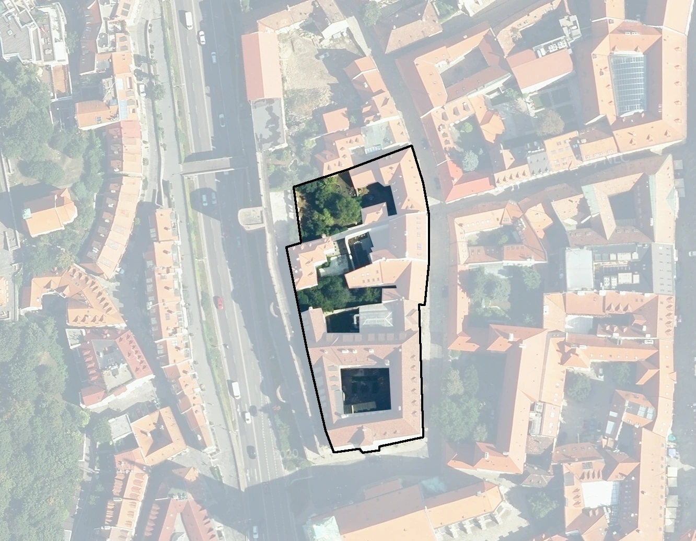

Kapitulská landscape
A sequence of connected courtyards within a national heritage campus in Bratislava’s historic core.
Concept and design of courtyards two through four, including space for community gardening, relaxation, studying and an outdoor auditorium.
Campus courtyards
Planting becomes progressively greener and more untamed from courtyard 1 to courtyard 5.



2–4 · Courtyards addressed in the design
5 · Existing charity garden